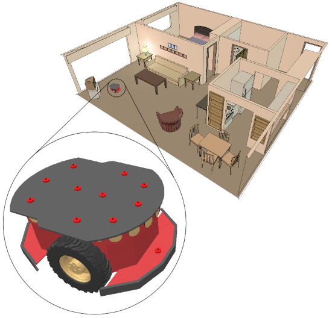

|
Scenes and modelsScenes and models are CoppeliaSim's main simulation elements. A model is a sub-element of a scene, clearly marked as model. A scene may contain any number of models. Following figure illustrates the scene-model relationship:  [Scene and model] Both, scenes and models, may contain one or several scene objects. Additionally, a scene also contains following elements: Scenes are saved as *.ttt files, and models are saved as *.ttm files. Both file types can be opened by dragging them from the explorer window and dropping them into the CoppeliaSim application. They can also be opened with a double-click. Refer also to sim.app:loadScene, sim.scene:remove, sim.scene:loadModel and sceneObject:removeModel. |